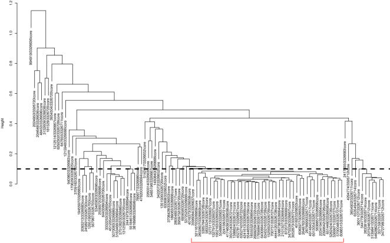

rMATS software: rMATS is a computational tool to detect differential alternative splicing events from replicate RNA-Seq data.
MATS software: MATS is a computational tool to detect differential alternative splicing events from RNA-Seq data. [MATS publication]
MADS+ software: A tool to discover differential splicing events from the Affymetrix exon junction array data. [MADS+ publication]
MADS software:
Microarray Analysis of Differential Splicing. A freely available tool for detecting differentially spliced exons from Affymetrix Exon 1.0 array data. Details on MADS algorithm.
GeneBASE software:
Gene-level Background Adjusted Selected probe Expression. A freely available tool for computing Affymetrix Exon array gene-level expression estimates. Details on [background correction] [probe selection].

Isoform-EM:
An expecation-maximization (EM) algorithm for probabilistic reconstructions of full-length isoforms from splice graphs. Source code in R.